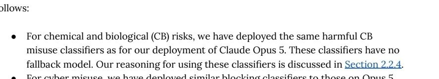

devastated to announce sonnet 5.5 is way more sensitive than opus 5 on the bio blocking for me despite the system card claims. Just got blocked on making an animation with sonnet 5.5 and some mol biology planning and on both opus 5 happily took over. https://t.co/oVDDh1CJyX
